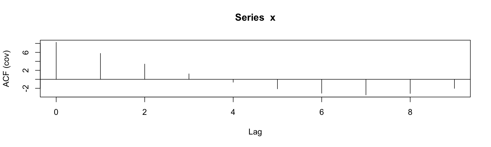
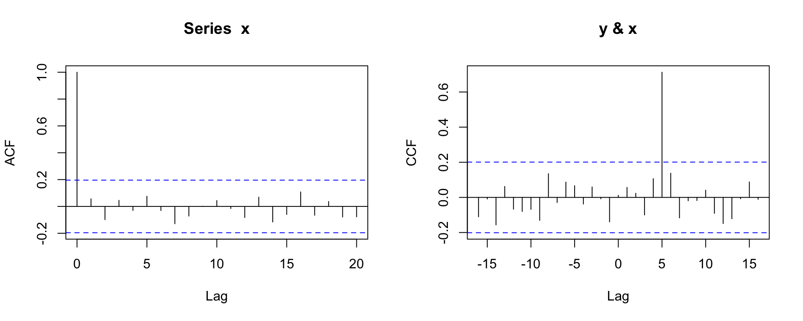
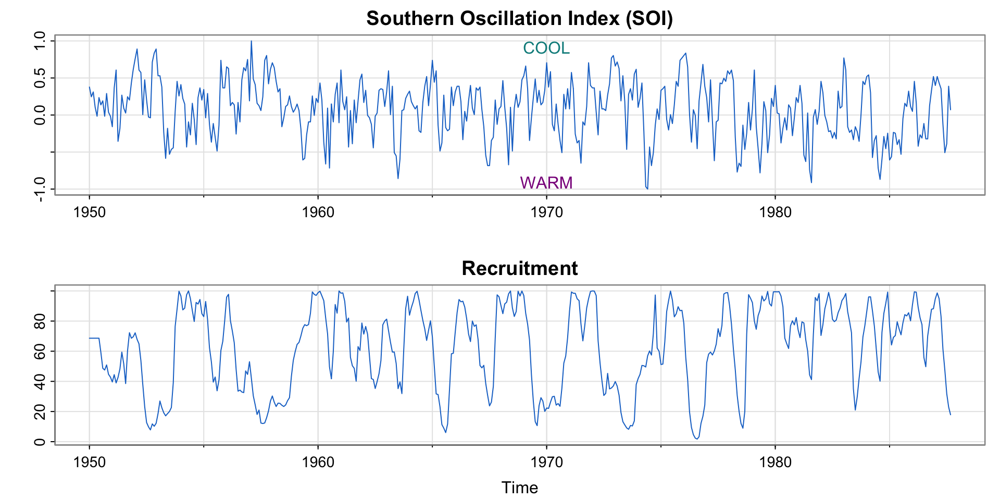
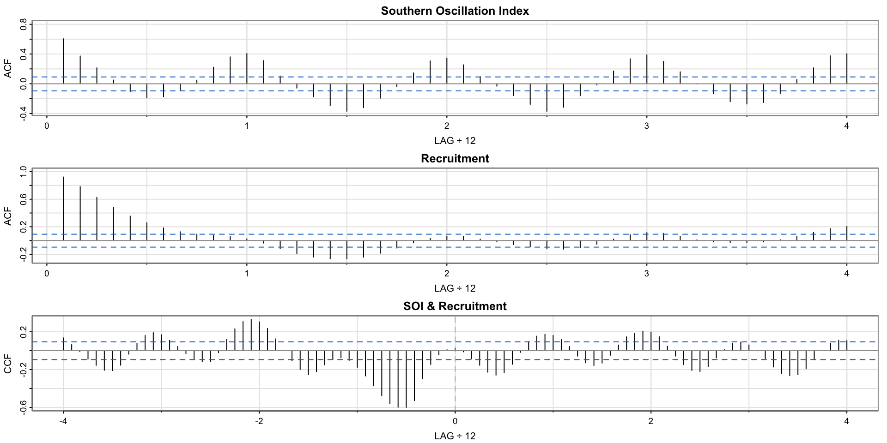
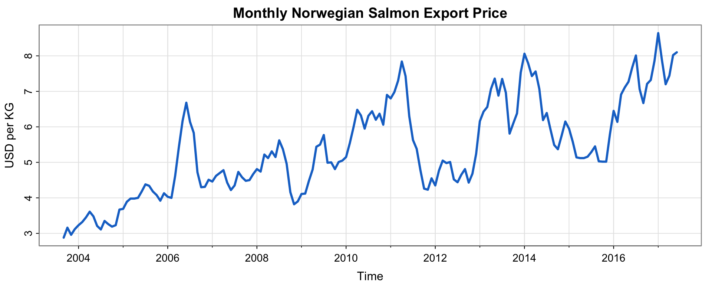
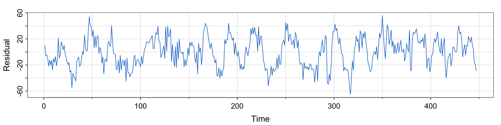

Time Series:
Start = -1
End = 6
Frequency = 1
x lag(x, -1) lag(x, 2)
-1 NA NA 2
0 NA NA 1
1 2 NA 14
2 1 2 6
3 14 1 10
4 6 14 NA
5 10 6 NA
6 NA 10 NA时间序列分析与预测
第四讲：参数的估计
黄嘉平
深圳大学中国经济特区研究中心
粤海校区汇文楼1510
https://huangjp.com/
相关性统计量的估计
总体和样本统计量
统计学中常用的描述性统计量
| 总体统计量 | 样本统计量 | R 命令 |
|---|---|---|
| \mu_x =E(X) | \bar{x} = \tfrac{1}{ n}\sum_{i=1}^n x_i | mean(x) |
| \sigma_x^2=\mathrm{var}(X) | s_x^2=\tfrac{1}{n-1}\sum_{i=1}^n (x_i- \bar{x})^2 | var(x) |
| \sigma_x=\sqrt{\mathrm{var}(X)} | s_x = \sqrt{s_x^2} | sd(x) |
| \sigma_{xy}=\mathrm{cov}(X, Y) | s_{xy} = \frac{1}{n-1}\sum_{i=1}^n (x_i- \bar{x})(y_i - \bar{y}) | cov(x, y) |
| \mathrm{corr}(X,Y)= \sigma_{xy}/(\sigma_x \sigma_y) | \rho_{xy} = s_{xy}/(s_x s_y) | cor(x, y) |
“样本统计量” 是利用样本对总体统计量进行估计的方法，应称作估计量。同一个统计量可以有多个估计量，我们根据需要选择最合适的。例如为了满足非偏性（即估计量的期望值等于对应的总体统计量），我们在 s_x^2 的定义中除以 n-1 而不是 n。
时间序列数据中的 lag 和 lead
| t | x_t | x_{t-1} | x_{t-2} | x_{t+1} | x_{t+2} |
|---|---|---|---|---|---|
| 1 | 15 | NA | NA | 11 | 9 |
| 2 | 11 | 15 | NA | 9 | 26 |
| 3 | 9 | 11 | 15 | 26 | 3 |
| 4 | 26 | 9 | 11 | 3 | 112 |
| 5 | 3 | 26 | 9 | 112 | 58 |
| 6 | 112 | 3 | 26 | 58 | NA |
| 7 | 58 | 112 | 3 | NA | NA |
计算样本自协方差
计算 \hat{\gamma}_x(t-2, t) 时，有效数据的范围是 t = 3, 4, \cdots, 7 ，因此
\widehat{\gamma}_x(t-2, t) = \frac{1}{5-2} \sum_{t=3}^7(x_{t-2} - \widehat{\mu}_{x,t-2})(x_{t} - \widehat{\mu}_{x,t})
如果假定 \{x_t\} 是平稳序列，则
\widehat{\mu}_{xs} = \widehat{\mu}_{xt} = \frac{1}{T} \sum_{t=1}^T x_t = \overline{x}
样本自协方差函数为
\widehat{\gamma}_x(h) = \mathrm{cov}(x_{t+h}, x_t) = \frac{1}{T} \sum_{t=\max\{1,1-h\}}^{\min\{T-h, T\}}(x_{t+h} - \overline{x})(x_{t} - \overline{x})
| t | x_t | x_{t-2} |
|---|---|---|
| 1 | 15 | NA |
| 2 | 11 | NA |
| 3 | 9 | 15 |
| 4 | 26 | 11 |
| 5 | 3 | 9 |
| 6 | 112 | 26 |
| 7 | 58 | 3 |
平稳假设下的样本 ACF 和 CCF
样本 ACF
当 h = 0, 1, 2, \dots, T-1 时，
\widehat{\rho}_x(h) = \frac{\widehat{\gamma}_x(h)}{\widehat{\gamma}_x(0)} = \frac{\sum_{t=1}^{T-h}(x_{t+h} - \overline{x})(x_t - \overline{x})}{\sum_{t=1}^n (x_t - \overline{x})^2} ,
当 h<0 时可用 \widehat{\rho}_x(h) = \widehat{\rho}_x(-h) 计算。
样本交叉协方差函数和 CCF
当 h = 0, 1, 2, \dots, T-1 时，
\begin{align*} \widehat{\gamma}_{xy}(h) &= \frac{1}{T} \sum_{t=1}^{T-h}(x_{t+h} - \overline{x})(y_{t} - \overline{y}) , \quad \widehat{\rho}_{xy}(h) = \frac{\widehat{\gamma}_{xy}(h)}{\sqrt{\widehat{\gamma}_{x}(0)\widehat{\gamma}_{y}(0)}}, \end{align*}
当 h<0 时可用 \widehat{\gamma}_{xy}(h) = \widehat{\gamma}_{yx}(-h) 计算。
R 命令 lag()
在 R 中，根据已知序列求滞后项（或先行项）的命令是 lag()。
lag()并不要求输入变量是 ts 类型，上面这样做是为了cbind()的输出结果。lag(x,h)生成的是 x_{t+h}。
R 命令 acf()

R 命令 acf()
主要参数：
acf(x, type = "covariance", plot = FALSE)type可以是"correlation"（初始设定）、"covariance"或"partial"（偏自相关，后面会学习）。acf()的结果是一个称作 acf class 的 list。
Hands-On Programming with R, 5.7 Lists计算交叉自协方差和交叉自相关函数可用
ccf(x, y, ...)。
样本 ACF 与 CCF
x_t = w_t，y_t = x_{t-5} + u_t
\begin{align*} \Rightarrow \quad \gamma_{yx}(h) &= \mathrm{cov}(y_{t+h}, x_t) = \mathrm{cov}(x_{t+h-5} + u_{t+h}, x_t) \\ &= \mathrm{cov}(x_{t+h-5}, x_t)= \gamma_x(h-5) \\ \Rightarrow \quad \rho_{yx}(h) &= \frac{\gamma_x(h-5)}{\sqrt{\gamma_x(0)\gamma_y(0)}} \end{align*} 因为 \{x_t\} 是白噪声序列，\gamma_x(h-5) 尽在 h=5 时取正值。由此可以推断，样本 CCF \widehat{\rho}_{yx}(h) 在 h=5 时为正，其他时候接近零。
set.seed(21369); x <- rnorm(100); y <- lag(x, -5) + rnorm(100)
par(mfrow=c(1,2)); acf(x); ccf(y, x, ylab="CCF")
左图中的虚线是白噪声过程的样本 ACF 的 95% 置信区间。右图中的虚线是假设两个过程相互独立，且至少一个是白噪声过程时，样本 CCF 的 95% 置信区间。
astsa 包中提供了 acf1() 和 ccf2() 替代 stats 包中的 acf() 和 ccf() 命令。
因为 \rho(0) \equiv 1，acf1() 从 lag 1 开始绘图，并同时显示计算结果。
SOI 和新鱼数量的相关性分析
SOI 和新鱼数量的相关性分析
ACF 显示滞后 12 期（一年）与当期具有正相关，滞后 6 期则具有负相关。这与气候的年度周期性变化相符。CCF 在 h=-6 时显示峰值，说明 t-6 期的 SOI 和 t 期的新鱼数量呈负相关。
时间序列回归
回归模型和最小二乘估计
回归模型描述了一系列解释变量和被解释变量间的关系。
以 R 自带的 mtcars 数据集为例
| mpg | cyl | disp | hp | drat | wt | qsec | vs | am | gear | carb | |
|---|---|---|---|---|---|---|---|---|---|---|---|
| Mazda RX4 | 21.0 | 6 | 160.0 | 110 | 3.90 | 2.620 | 16.46 | 0 | 1 | 4 | 4 |
| Mazda RX4 Wag | 21.0 | 6 | 160.0 | 110 | 3.90 | 2.875 | 17.02 | 0 | 1 | 4 | 4 |
| Datsun 710 | 22.8 | 4 | 108.0 | 93 | 3.85 | 2.320 | 18.61 | 1 | 1 | 4 | 1 |
| Hornet 4 Drive | 21.4 | 6 | 258.0 | 110 | 3.08 | 3.215 | 19.44 | 1 | 0 | 3 | 1 |
| Hornet Sportabout | 18.7 | 8 | 360.0 | 175 | 3.15 | 3.440 | 17.02 | 0 | 0 | 3 | 2 |
| Valiant | 18.1 | 6 | 225.0 | 105 | 2.76 | 3.460 | 20.22 | 1 | 0 | 3 | 1 |
| Duster 360 | 14.3 | 8 | 360.0 | 245 | 3.21 | 3.570 | 15.84 | 0 | 0 | 3 | 4 |
| Merc 240D | 24.4 | 4 | 146.7 | 62 | 3.69 | 3.190 | 20.00 | 1 | 0 | 4 | 2 |
| Merc 230 | 22.8 | 4 | 140.8 | 95 | 3.92 | 3.150 | 22.90 | 1 | 0 | 4 | 2 |
| Merc 280 | 19.2 | 6 | 167.6 | 123 | 3.92 | 3.440 | 18.30 | 1 | 0 | 4 | 4 |
| Merc 280C | 17.8 | 6 | 167.6 | 123 | 3.92 | 3.440 | 18.90 | 1 | 0 | 4 | 4 |
| Merc 450SE | 16.4 | 8 | 275.8 | 180 | 3.07 | 4.070 | 17.40 | 0 | 0 | 3 | 3 |
| Merc 450SL | 17.3 | 8 | 275.8 | 180 | 3.07 | 3.730 | 17.60 | 0 | 0 | 3 | 3 |
| Merc 450SLC | 15.2 | 8 | 275.8 | 180 | 3.07 | 3.780 | 18.00 | 0 | 0 | 3 | 3 |
| Cadillac Fleetwood | 10.4 | 8 | 472.0 | 205 | 2.93 | 5.250 | 17.98 | 0 | 0 | 3 | 4 |
| Lincoln Continental | 10.4 | 8 | 460.0 | 215 | 3.00 | 5.424 | 17.82 | 0 | 0 | 3 | 4 |
| Chrysler Imperial | 14.7 | 8 | 440.0 | 230 | 3.23 | 5.345 | 17.42 | 0 | 0 | 3 | 4 |
| Fiat 128 | 32.4 | 4 | 78.7 | 66 | 4.08 | 2.200 | 19.47 | 1 | 1 | 4 | 1 |
| Honda Civic | 30.4 | 4 | 75.7 | 52 | 4.93 | 1.615 | 18.52 | 1 | 1 | 4 | 2 |
| Toyota Corolla | 33.9 | 4 | 71.1 | 65 | 4.22 | 1.835 | 19.90 | 1 | 1 | 4 | 1 |
| Toyota Corona | 21.5 | 4 | 120.1 | 97 | 3.70 | 2.465 | 20.01 | 1 | 0 | 3 | 1 |
| Dodge Challenger | 15.5 | 8 | 318.0 | 150 | 2.76 | 3.520 | 16.87 | 0 | 0 | 3 | 2 |
| AMC Javelin | 15.2 | 8 | 304.0 | 150 | 3.15 | 3.435 | 17.30 | 0 | 0 | 3 | 2 |
| Camaro Z28 | 13.3 | 8 | 350.0 | 245 | 3.73 | 3.840 | 15.41 | 0 | 0 | 3 | 4 |
| Pontiac Firebird | 19.2 | 8 | 400.0 | 175 | 3.08 | 3.845 | 17.05 | 0 | 0 | 3 | 2 |
| Fiat X1-9 | 27.3 | 4 | 79.0 | 66 | 4.08 | 1.935 | 18.90 | 1 | 1 | 4 | 1 |
| Porsche 914-2 | 26.0 | 4 | 120.3 | 91 | 4.43 | 2.140 | 16.70 | 0 | 1 | 5 | 2 |
| Lotus Europa | 30.4 | 4 | 95.1 | 113 | 3.77 | 1.513 | 16.90 | 1 | 1 | 5 | 2 |
| Ford Pantera L | 15.8 | 8 | 351.0 | 264 | 4.22 | 3.170 | 14.50 | 0 | 1 | 5 | 4 |
| Ferrari Dino | 19.7 | 6 | 145.0 | 175 | 3.62 | 2.770 | 15.50 | 0 | 1 | 5 | 6 |
| Maserati Bora | 15.0 | 8 | 301.0 | 335 | 3.54 | 3.570 | 14.60 | 0 | 1 | 5 | 8 |
| Volvo 142E | 21.4 | 4 | 121.0 | 109 | 4.11 | 2.780 | 18.60 | 1 | 1 | 4 | 2 |
mpg: Miles/gallon, hp: Gross horsepower, wt: Weight
我们可以考虑回归模型
\mathrm{mpg}_i = \beta_0 + \beta_1 \mathrm{hp}_i + \beta_2 \mathrm{wt}_i + \varepsilon_i
回归模型和最小二乘估计
Call:
lm(formula = mpg ~ hp + wt, data = mtcars)
Residuals:
Min 1Q Median 3Q Max
-3.941 -1.600 -0.182 1.050 5.854
Coefficients:
Estimate Std. Error t value Pr(>|t|)
(Intercept) 37.22727 1.59879 23.285 < 2e-16 ***
hp -0.03177 0.00903 -3.519 0.00145 **
wt -3.87783 0.63273 -6.129 1.12e-06 ***
---
Signif. codes: 0 '***' 0.001 '**' 0.01 '*' 0.05 '.' 0.1 ' ' 1
Residual standard error: 2.593 on 29 degrees of freedom
Multiple R-squared: 0.8268, Adjusted R-squared: 0.8148
F-statistic: 69.21 on 2 and 29 DF, p-value: 9.109e-12时间序列回归
时间序列回归模型可以写为
x_t = \beta_0 + \beta_1 z_{t1} + \beta_2 z_{t2} + \cdots + \beta_q z_{tq} + w_t ,
其中，z_{tk} 代表第 k 个解释变量的在时间 t 的观测值，w_t 是白噪声。
解释变量也可以是时间 t 的函数，例如
z_t = \beta_0 + \beta_1 t + \beta_2 x_t + w_t .
可以用最小二乘法估计系数 \beta_0, \beta_1, \dots。
估计商品的线性趋势
利用 astsa 包中的数据集 salmon，考虑简单的回归模型
x_t = \beta_0 + \beta_1 t + w_t
估计商品的线性趋势
salmon 是 ts 变量，可以用 time() 提取时间信息
Call:
lm(formula = salmon ~ time(salmon))
Residuals:
Min 1Q Median 3Q Max
-1.69187 -0.62453 -0.07024 0.51561 2.34959
Coefficients:
Estimate Std. Error t value Pr(>|t|)
(Intercept) -503.08947 34.44164 -14.61 <2e-16 ***
time(salmon) 0.25290 0.01713 14.76 <2e-16 ***
---
Signif. codes: 0 '***' 0.001 '**' 0.01 '*' 0.05 '.' 0.1 ' ' 1
Residual standard error: 0.8814 on 164 degrees of freedom
Multiple R-squared: 0.5706, Adjusted R-squared: 0.568
F-statistic: 217.9 on 1 and 164 DF, p-value: < 2.2e-16估计商品的线性趋势

模型选择
在众多备选模型中，我们希望找到解释能力最强的。那么什么是解释能力最强呢？下面我们列出几种参考指标。
均方误差（mean squared error, MSE）：
\mathrm{MSE} = \sum(x_t - \widehat{x}_t)^2 / (n-q-1) = \mathrm{SSE} / (n-q-1) 。越小越好
决定系数（coefficient of determination, R2）：
R^2 = \sum(\widehat{x}_t - \overline{x})^2 / \sum(x_t - \overline{x})^2 = \mathrm{SSR}/\mathrm{SST} = 1 - \mathrm{SSE}/\mathrm{SST}。越大越好
AIC（Akaike’s information criterion）：
\mathrm{AIC} = \log\big(\mathrm{SSE}(k)/{T}\big) + (T+2k)/{T}，k 为模型中参数的个数。越小越好
BIC（Bayesian information criterion）：
\mathrm{BIC} = \log\big(\mathrm{SSE}(k)/{T}\big) + (k\log T)/{T}， k 为模型中参数的个数。越小越好
带有滞后变量的回归
我们从样本 CCF 中发现 6 个月前的南方涛动指数 SOI 和现在的新鱼数量指数相关。为了验证这个命题，可以考虑下面的回归模型
R_t = \beta_0 + \beta_1 S_{t-6} + w_t ,
其中 R_t 是 t 月的新鱼数量指数，S_{t-6} 是 t-6 月的 SOI。
模型的拟合结果是 \widehat{R}_t = \underset{(1.09)}{65.79} - \underset{(2.78)}{44.28}\, S_{t-6}。我们假设 w_t 是白噪声，但是下面的回归残差图并不支持这一假设。这说明模型是错误的。

用 dynlm 包进行带有滞后变量的回归
R 中的 lm() 命令对处理时间序列数据的滞后项并不拿手，详情可参考书中第三章中的例 3.6。用 dynlm 包中的 dynlm() 命令可以更简单的完成带有滞后变量的回归。
Time series regression with "ts" data:
Start = 1950(7), End = 1987(9)
Call:
dynlm(formula = rec ~ L(soi, 6))
Residuals:
Min 1Q Median 3Q Max
-65.187 -18.234 0.354 16.580 55.790
Coefficients:
Estimate Std. Error t value Pr(>|t|)
(Intercept) 65.790 1.088 60.47 <2e-16 ***
L(soi, 6) -44.283 2.781 -15.92 <2e-16 ***
---
Signif. codes: 0 '***' 0.001 '**' 0.01 '*' 0.05 '.' 0.1 ' ' 1
Residual standard error: 22.5 on 445 degrees of freedom
Multiple R-squared: 0.3629, Adjusted R-squared: 0.3615
F-statistic: 253.5 on 1 and 445 DF, p-value: < 2.2e-16